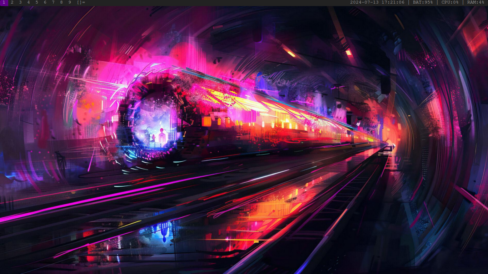

Home, Archive, Videos, Links, Contact
DWM stands for Dynamic Window Manager. It is a window manager for X.org; it was developed by the programmers at Suckless Software. DWM is super lightweight, with the entire window manager programmed in about 3,000 lines of C code. Its very minimalistic, allowing users to modify and patch it to their heart's content!
The reason why I have chosen DWM as my window manager is because recently I have been on a sort of pilgrimage for the perfect window manager, something lightweight and functionable. I started my window manager pilgrimage with the very user-friendly and configurable Qtile written in Python; I was happy with it. But I felt the urge to explore more into window managers, so from there I tried out I3, another great window manager, and I really enjoyed using it, but I wanted to test out the most lightweight and fastest window manager, being DWM. As of writing, I believe this is the end of my pilgrimage since I am more than happy with DWM.
There is also the fact that I want to try out Linux from scratch, Gentoo, and Freebsd in the future, so having the same window manager throughout using all of these operating systems will just make it easier for me to use the OS.

Here is my DWM setup on my PC as of 13-7-2024
I love DWM and I plan to use it for as long as I can, there is a wayland version of DWM called DWL so even if I do switch to wayland I will still be able to use DWM. I am exited to further work on my DWM setup and keep an eye on my dotfiles for any updates!
Note 26-10-2025) I am still using it, and yes. It is still awesome.